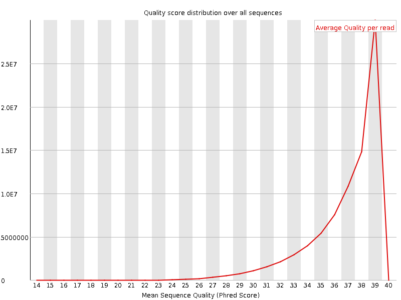
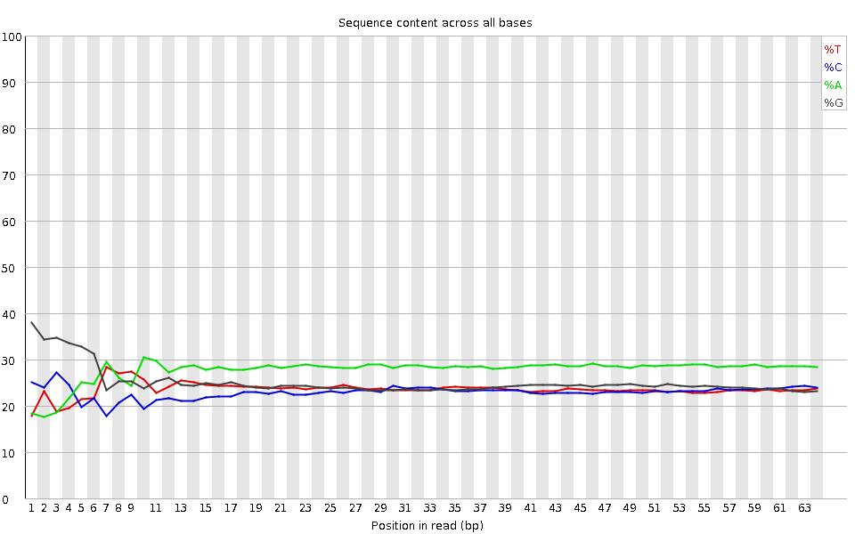
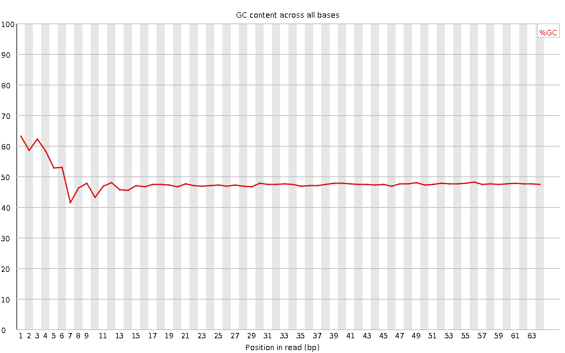
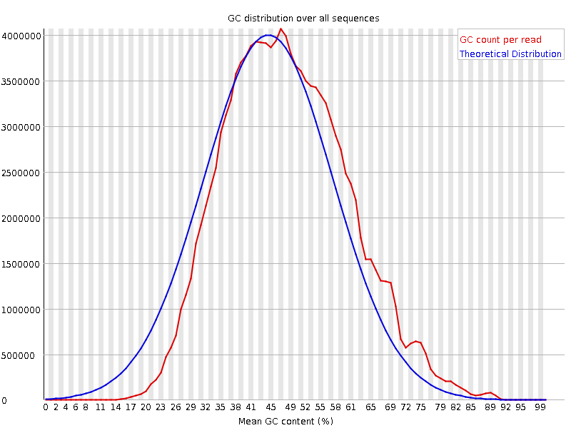
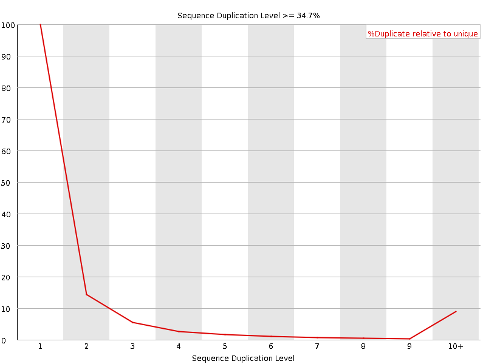
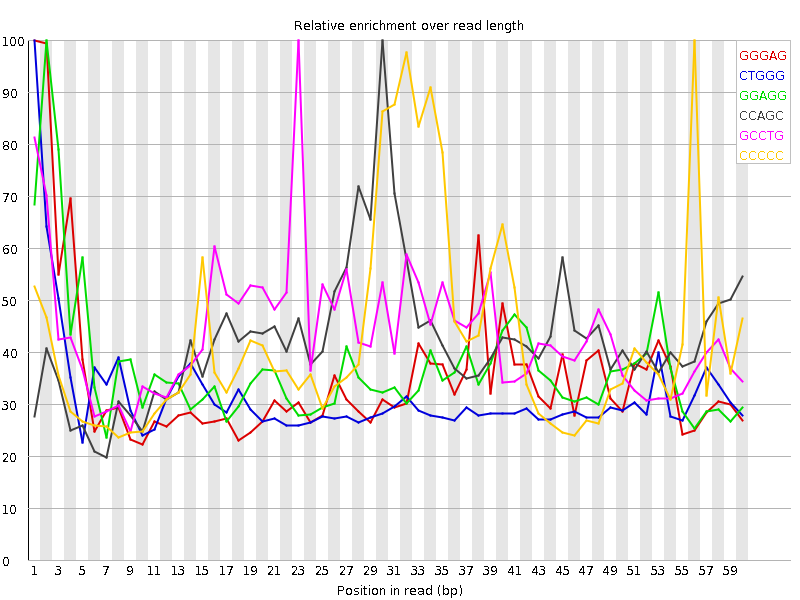

![[OK]](Icons/tick.png) Basic Statistics
Basic Statistics
| Measure | Value |
|---|---|
| Filename | SRR317061_pe_1.f.fastq |
| File type | Conventional base calls |
| Encoding | Sanger / Illumina 1.9 |
| Total Sequences | 82822719 |
| Filtered Sequences | 0 |
| Sequence length | 64 |
| %GC | 48 |
Per base sequence quality

Per sequence quality scores

![[FAIL]](Icons/error.png) Per base sequence content
Per base sequence content

Per base GC content

![[WARN]](Icons/warning.png) Per sequence GC content
Per sequence GC content

Per base N content

Sequence Length Distribution

Sequence Duplication Levels

Overrepresented sequences
| Sequence | Count | Percentage | Possible Source |
|---|---|---|---|
| GGTTGGTGCGCGGACACGCACTGCCTGCGTAACTAGAGGGAGCTGACGGATGACGCCCCCGCGC | 180231 | 0.2176105809808055 | No Hit |
| CCGTCGGCATGTATTAGCTCTAGAATTACCACAGTTATCCAAGTAGGAGAGGAGCGAGCGACCA | 143317 | 0.1730406846459605 | No Hit |
| GTCGGCATGTATTAGCTCTAGAATTACCACAGTTATCCAAGTAGGAGAGGAGCGAGCGACCAAA | 135850 | 0.16402504245242178 | No Hit |
| CCCGTCGGCATGTATTAGCTCTAGAATTACCACAGTTATCCAAGTAGGAGAGGAGCGAGCGACC | 132404 | 0.1598643483317663 | No Hit |
| GGCGGGGGTGCGTCGGGTCTGCGAGAGCGCCAGCTATCCTGAGGGAAACTTCGGAGGGAACCAG | 112424 | 0.13574053273957354 | No Hit |
| GCTGGATAGTAGGTAGGGACAGTGGGAATCTCGTTCATCCATTCATGCGCGTCACTAATTAGAT | 86437 | 0.1043638762934117 | No Hit |
Kmer Content

| Sequence | Count | Obs/Exp Overall | Obs/Exp Max | Max Obs/Exp Position |
|---|---|---|---|---|
| GGGAG | 13881150 | 2.4681242 | 7.018583 | 1 |
| CTGGG | 10361925 | 2.368181 | 7.462704 | 1 |
| GGAGG | 13259090 | 2.3575196 | 6.3541117 | 2 |
| CCAGC | 9892020 | 2.2954288 | 5.412323 | 30 |
| GCCTG | 9034450 | 2.2564304 | 5.1561384 | 23 |
| CCCCC | 7294590 | 2.2382658 | 5.231301 | 56 |
| GGCTG | 9528295 | 2.1776578 | 6.2656465 | 1 |
| CTGCC | 7229560 | 1.9732302 | 5.096648 | 21 |
| GCTGG | 8602635 | 1.9661015 | 7.0982184 | 1 |
| CCTGC | 6896260 | 1.8822596 | 5.05538 | 24 |
| GGCAG | 9455400 | 1.8372457 | 5.2576423 | 1 |
| GCGCC | 7139435 | 1.8343539 | 5.035777 | 27 |
| GGGGG | 9120355 | 1.7955347 | 9.505332 | 1 |
| GGGGA | 9988675 | 1.7760265 | 7.463928 | 1 |
| GTGTG | 7386350 | 1.6409874 | 5.2527103 | 1 |
| CCCGC | 5718505 | 1.6056377 | 5.0588284 | 58 |
| GTGGG | 7274740 | 1.5214097 | 8.487637 | 1 |
| TGGGG | 7100440 | 1.4849573 | 6.7787657 | 1 |
| GTGGT | 6527050 | 1.4500811 | 5.025036 | 1 |
| GGGCA | 7119095 | 1.3832865 | 5.2085605 | 1 |
| GGGTG | 6605215 | 1.381388 | 5.5599003 | 2 |
| GGGGT | 6520645 | 1.3637012 | 6.978595 | 3 |
| GGGCT | 5905790 | 1.3497473 | 5.863313 | 3 |
| CGGGG | 6147715 | 1.3226397 | 7.172792 | 1 |
| GGGGC | 5870350 | 1.2629663 | 5.5585065 | 2 |
| GGCGG | 5827620 | 1.2537735 | 6.6731644 | 1 |
| GGTGC | 5419870 | 1.2386919 | 6.3034253 | 5 |
| GCGGG | 5680955 | 1.2222195 | 5.689142 | 1 |